Full-Stack .NET Developer
Flip for more information.
Welcome to my portfolio. My name is El Mehdi Mehaoune, and I was
born in Khouribga, Morocco, on March 1, 2002. I obtained my
Baccalaureate degree twice and continued my studies at OFPPT, where
I studied Electrical.
Alongside my studies, I developed a strong interest in programming
and software development. This interest motivated me to learn how to
build applications and improve my skills in full stack development,
desktop applications, and web technologies.
Below, you will find the most important information about my
education, skills, projects, and experiences.
Flip for more information.
Develop software projects using C++ and C# (.NET Framework), building Windows Forms and Console applications. Currently expanding into web development with HTML, CSS, and JavaScript.
Flip for more information.
Able to transform ideas into visual designs, including logos, presentations, and applications. Skilled at combining colors effectively and creating well-structured layouts with proper visual balance.
Flip for more information.
Content Engagement Specialist leveraging consumer psychology to attract and retain audience attention. Proficient in video and photo editing, producing high-quality visual content for presentations, social media, and marketing materials.
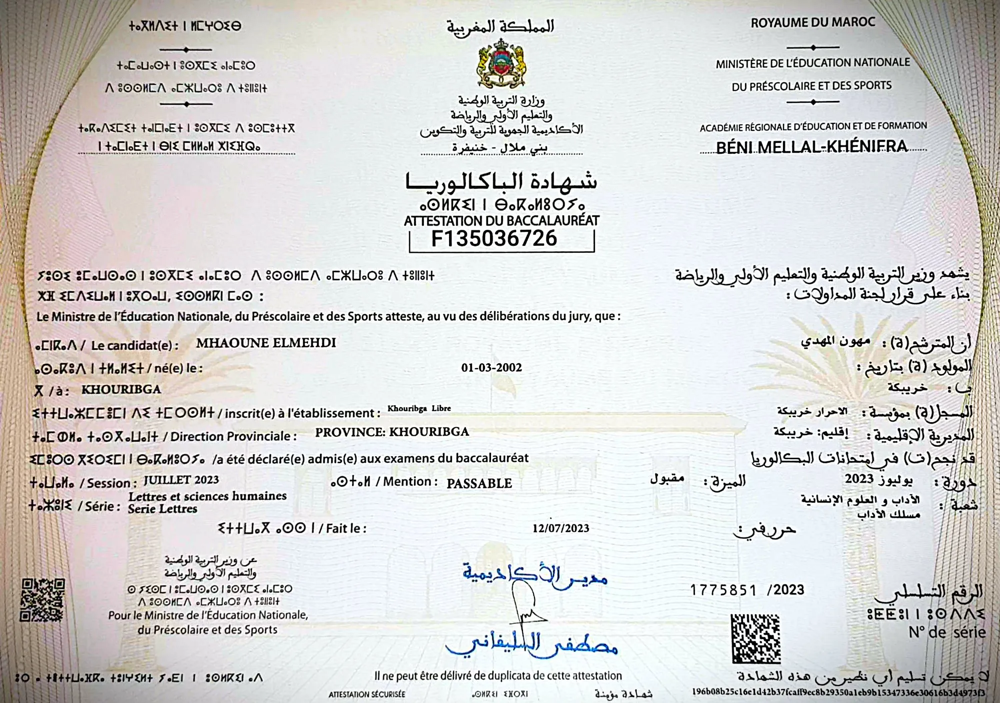
I obtained my Baccalaureate (free track) in Literature and Human Sciences at Lycée Ibn Yassin – Khouribga
I obtained my Baccalaureate (free track) in Life and Earth Sciences at Lycée Ibn Yassin – Khouribga
In this course I learned the fundamental concepts of programming before starting to write code. I understood how computers work, how data is represented and processed, and the difference between data, information, knowledge, and wisdom. I learned number systems like binary, hexadecimal, and octal and how to convert between them. I also learned about bits, bytes, memory concepts, and computer performance. The course introduced programming languages, translation tools like compilers and interpreters, and basic programming concepts such as variables, constants, and operations. This course helped me build a strong foundation and understand how computers think before learning any programming language.
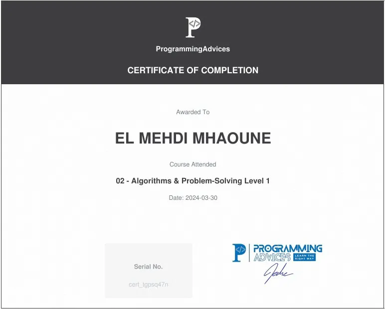
In this course I learned how to think and solve problems before writing code. I understood what an algorithm is and how to analyze problems logically. I practiced breaking complex problems into simple steps and designing solutions using flowcharts. I also learned how to identify inputs, processes, decisions, and outputs when solving problems. Through many practical exercises, this course helped me improve my problem-solving skills and build the right mindset for programming before using any programming language.
In this course I learned the basics of programming using C++. I understood how to translate problem-solving thinking into real code. I practiced writing C++ programs using variables, data types, input and output, operators, conditions, and loops. I also learned how to organize code using functions and work with arrays, structures, and enums. This course helped me understand C++ as a programming tool and strengthened my ability to build structured programs and apply logical thinking in real coding.
In this course I improved my problem-solving skills by solving the same problems again using C++ with a clean and structured approach. I learned how to transform simple solutions into clean and readable code by applying the divide and conquer technique. I practiced breaking problems into smaller sub-problems and building solutions using small reusable functions. This course helped me reduce repeated code, improve code organization, and write programs that are easier to understand, maintain, and extend.
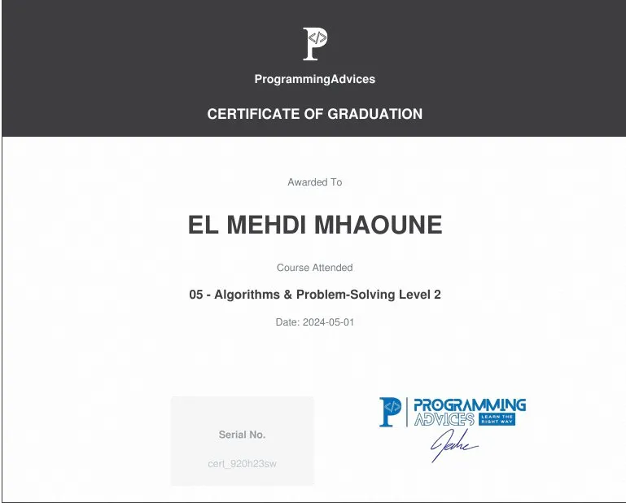
In this course I practiced solving more complex programming problems using C++. I worked on many exercises that helped me improve my problem-solving speed and logical thinking. I learned new solution ideas by studying professional solutions and applying clean code and divide and conquer techniques. The course also introduced real programming projects, which helped me gain practical experience and move from solving problems to building complete programs.
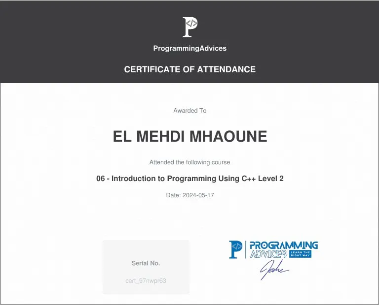
In this course I learned advanced C++ programming concepts and improved my control over how programs work. I practiced debugging programs using professional tools and learned how to analyze execution step by step. I understood memory concepts such as pointers, references, stack and heap, and dynamic memory allocation. I also learned advanced functions, vectors, file handling, and exception handling. This course helped me write more reliable programs and understand deeply how C++ manages memory and program behavior.
In this course I strengthened my programming experience by solving more advanced algorithmic problems using C++. I practiced applying clean code principles and the divide and conquer approach while working on challenging exercises. This course helped me improve my problem-solving speed, recognize common patterns, and handle more complex problems with confidence. I also worked on real programming projects, which helped me move from solving individual problems to building complete and structured programs.
In this course I strengthened my programming experience by solving many advanced algorithmic problems using C++. I practiced applying clean code principles and divide and conquer techniques while working on a large set of challenging problems. This course helped me improve my analytical thinking, handle complex logic, and maintain structured solutions even with bigger problems. I also worked on realistic programming projects that helped me gain deeper experience and prepare for real-world programming challenges.
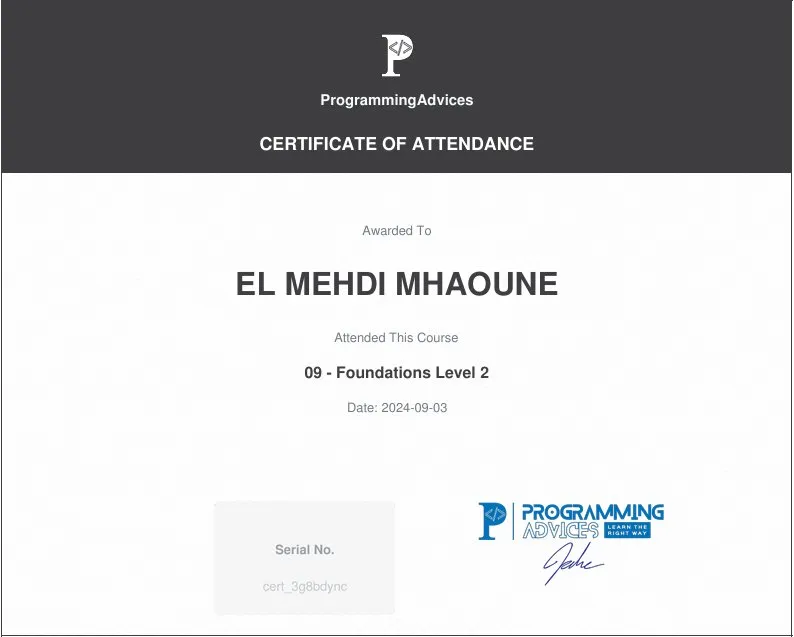
I learned how networks work and how devices connect and communicate. I learned about network types (LAN, MAN, WAN), components (routers, switches, modems), and their roles. I learned how data is sent in packets and how TCP ensures reliable delivery. I learned about IPv4 and IPv6, subnet masks, NAT, DHCP, ports and sockets, and MAC addresses. I learned how VPNs secure connections, the difference between Internet and WWW, how browsers and HTTP/HTTPS work, and how domains, URLs, subdomains, and DNS identify and locate web resources. I also learned how FTP transfers files between client and server. This course gave me a clear understanding of networking, internet protocols, and web addressing, and how all these parts work together to make the internet function.
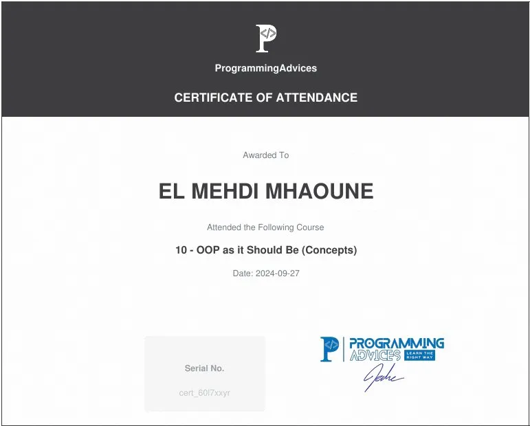
In this course I learned Object-Oriented Programming (OOP) the right way, focusing on design rather than just syntax. I practiced designing and using classes and objects correctly, understanding how objects work in memory, and applying concepts like encapsulation, abstraction, constructors, destructors, and copy constructors. I also learned to use static members, inheritance, polymorphism, virtual functions, and dynamic binding properly. In addition, I explored interfaces, abstract classes, and pure virtual functions, and practiced organizing code using libraries and reusable components. Through small projects like a calculator, string library, date library, and period class design, I applied OOP concepts to real problems, reinforcing clean and maintainable design thinking. This course helped me move from procedural coding to confident OOP-based design.
In this course I learned how to apply Object-Oriented Programming (OOP) concepts to build real-world applications and complete software systems. I practiced designing and structuring large programs using encapsulation, abstraction, inheritance, and polymorphism. I also learned to create reusable libraries, handle permissions, validation, logging, and apply security rules professionally. Through project-based learning, I built systems like a utility library, input & validation library, a complete bank system with users, login, logs, and multiple extensions, and a currency exchange system. This course helped me move from understanding OOP concepts to executing them in real software, managing complexity, and writing maintainable, scalable, and professional OOP code.
In this course I learned how to organize and manage data efficiently using core data structures. I practiced working with arrays, matrices, stacks, queues, vectors, and linked lists (singly, doubly, and circular). I also learned the concept of Abstract Data Types (ADT), basic maps and unions, and how to analyze performance using Time & Space Complexity (Big O notation). Through practical exercises, I understood why each data structure exists, when to use it, and how to perform operations like insert, delete, and find correctly. This course helped me build a solid foundation in data structures, preparing me for advanced structures, algorithms, and real-world problem-solving.
In this course I practiced applying data structures and problem-solving skills through real projects and extended exercises. I reinforced my understanding of arrays, stacks, queues, linked lists, and Big O notation by using them in evolving systems with multiple requirements. I learned how to solve complex problems using structured thinking, extend existing projects safely, and handle growing functionality without losing control. Through project-based learning, I gained experience simulating real-world software development, including changing requirements and feature growth. This course helped me consolidate Part One of the programming roadmap, building confidence in my algorithmic thinking, data structure usage, and readiness for advanced programming and C# desktop development.
In this course I learned how to set up the C# environment and the differences between libraries, frameworks, and platforms. I studied the .NET ecosystem, including .NET Framework, .NET Core, CLR architecture, and key components like CTS, CLS, JIT, GC, and assemblies. I practiced writing C# code, moving from C++ syntax to C#, using variables, data types, operators, control flow, arrays, type casting, methods, exceptions, and working with DateTime and strings. I also learned to handle user input, apply loops and conditionals, and perform array operations using System.Linq. The course introduced Windows Forms development, covering controls like TextBox, PictureBox, ComboBox, ListView, ProgressBar, and Dialogs, as well as event handling, drawing, and creating small projects such as a Pizza app and Tic-Tac-Toe game. Through hands-on projects, I practiced designing interactive desktop applications, using containers, menus, timers, and notifications. This course helped me build a solid foundation in C# programming and Windows Forms, preparing me to create complete, professional desktop applications.
In this course I learned the foundations of databases and how to use SQL effectively as a core programming skill. I studied database concepts, including NULL, redundancy, integrity, constraints, and the difference between data structures and databases. I practiced designing databases correctly using ERD, converting them into relational schemas, and applying primary and foreign keys. I learned to write SQL confidently, covering DDL commands (Create, Alter, Drop), DML commands (Insert, Update, Delete), and queries using Select, Where, Group By, Having, and Joins. I also learned to use views and indexes properly, apply normalization (1NF → 3NF and beyond), and understand how design decisions affect database performance. Through practical exercises and real examples, I gained experience building database-driven applications and ensuring they are scalable, efficient, and maintainable. This course helped me master database design and SQL, saving development time and preparing me for advanced backend and database courses.
In this course I learned how to apply object-oriented programming principles correctly in C#. I practiced designing classes and objects with proper encapsulation, using access modifiers and properties instead of exposing fields. I learned to work with constructors, destructors, static members, and static classes effectively. I studied and applied the four OOP principles—encapsulation, abstraction, inheritance, and polymorphism—through small projects and exercises. I worked with abstract classes, interfaces, method overriding vs hiding, upcasting and downcasting, composition vs inheritance, sealed classes, and partial classes. The course emphasized writing clean, extensible, and maintainable OOP code, building reusable class libraries, and making design decisions that control complexity. It helped me bridge my theoretical OOP knowledge into practical C# programming and prepared me for larger, enterprise-level backend systems.
In this course I learned how to turn database knowledge into real SQL mastery through hands-on projects. I practiced designing complete databases from requirements, converting them into ERDs and relational schemas, and applying normalization correctly in real scenarios. I worked with real datasets and learned how design choices affect performance and scalability. I built fluency in SQL by solving 50+ practical problems covering filtering, sorting, grouping, aggregation, complex joins, subqueries, views, calculated columns, CASE statements, UNIONs, EXISTS, and conditional logic. I also handled real-world scenarios such as clinics, libraries, clubs, rentals, online stores, self-referential relationships, GUID usage, and data importing. The course emphasized professional, performance-aware SQL, reinforcing habits for speed, confidence, and correctness, preparing me to handle large, production-ready databases and backend systems efficiently.
In this course I learned how C# applications communicate with databases at a fundamental level using ADO.NET. I practiced connecting C# projects to SQL Server, retrieving and manipulating data with DataReader, DataTable, DataSet, and DataView, and performing full CRUD operations safely using parameterized queries. I also learned to handle filtering, IN statements, and single-value retrieval with ExecuteScalar. The course emphasized proper 3-tier architecture, separating Presentation, Business, and Data Access layers, and building real-world projects including console and Windows Forms applications like a contacts management system. I gained deep understanding of data access concepts, performance considerations, and the differences between online/offline data and speed/flexibility trade-offs. This foundation prepares me to use ORMs such as Entity Framework efficiently, debug data access issues, and write fast, maintainable, and secure backend code without relying on tool-specific shortcuts.
In this course I built a complete, production-style system — the DVLD (Driving License Management System) — applying everything I learned from programming foundations, OOP in C#, databases, and ADO.NET. I designed the database schema, implemented a 3-tier architecture with Presentation, Business, and Data Access layers, and handled real workflows including user authentication, login, permissions, and validation rules. I implemented modules for people and user management, application types, test types, license issuance, renewal, replacement, detainment, international licenses, reports, and history tracking. I learned how to translate requirements into tables, enforce business rules correctly, and organize a large codebase for readability and maintainability. This course reinforced professional software development skills by showing how real systems grow over time, how modules interact, and how clean architecture, OOP, and database practices come together in a complete, working application.
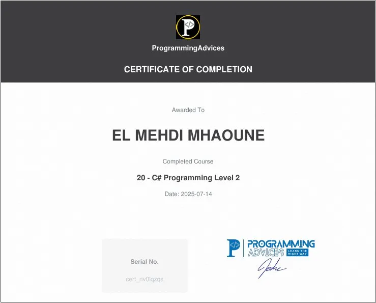
In this course I deepened my C# knowledge beyond syntax, focusing on advanced programming concepts that make applications robust, scalable, and maintainable. I mastered passing data between forms, creating reusable User Controls, and implementing events and delegates, including Func, Action, Predicate, and lambda expressions. I worked with advanced topics such as serialization (XML, JSON, Binary), attributes, reflection, generics, operator overloading, nullable types, and mutable vs immutable types. I learned resource management with using and IDisposable, handled concurrency with multithreading, async/await, Tasks, and parallel programming, and applied Dependency Injection and the Open/Closed Principle. I also explored system-level features like Windows Registry, App.config, logging with Event Log, and calling stored procedures via ADO.NET. Through practice, I gained the ability to design, implement, and maintain complex C# systems — building real-world applications that are efficient, flexible, and enterprise-ready.
In this course I mastered T-SQL as a true programming language inside the database. I learned to write procedural logic using variables, IF/ELSE, CASE statements, WHILE loops, and control blocks, and I handled errors safely with TRY…CATCH, THROW, @@ERROR, and @@ROWCOUNT. I applied transactions to enforce consistency, worked with temporary data using table variables and temporary tables, and built reusable database logic with stored procedures, scalar functions, and table-valued functions. I also mastered advanced querying with window functions, paging, and recursive CTEs, and automated database tasks with triggers while following best security practices. I gained performance-aware thinking by understanding indexing, execution plans, and query optimization. Through real examples and projects, I became confident in designing safe, reusable, and high-performance database solutions — turning SQL from a query tool into a true programming skill for enterprise and backend systems.
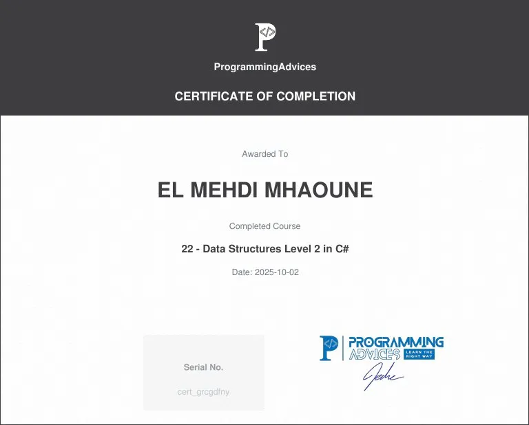
In this course I mastered advanced data structures in C# with a focus on practical usage, performance, and correctness. I learned to choose the right collection for each scenario, understanding generic vs non-generic collections, avoiding boxing/unboxing, and comparing key C# collections such as List, ArrayList, Dictionary, Hashtable, HashSet, SortedSet, SortedList, and ObservableCollection. I applied advanced operations with arrays, including multidimensional and jagged arrays, copying strategies, and LINQ integration, while working with memory-efficient structures like BitArray. I implemented modern language tools such as Tuples, and worked with collection interfaces including IEnumerable, ICollection, IList, IDictionary, ISet, creating custom collections and using IComparable for sorting custom objects. I also gained a solid understanding of advanced structures and algorithms including Trees (general and binary) with traversals, Graphs (adjacency matrix and list), Heaps (min-heap and max-heap), and Priority Queues. Through examples, comparisons, and quizzes, I developed a mindset to analyze trade-offs in speed, memory, and simplicity, preparing myself for deep practice, backend development, and high-performance systems in C#. This course transformed my understanding from "knowing names" to confidently choosing and using data structures in real applications.
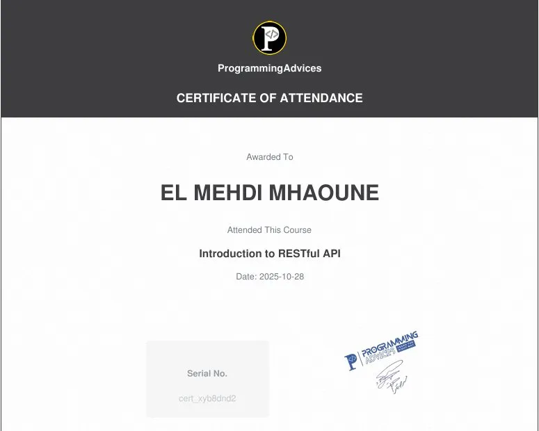
I learned how to use Win32 API in C# to access Windows system features like windows, processes, battery, screen resolution, and perform actions such as shutdown or message boxes. I also practiced automating Office apps (Word, Excel, PowerPoint, Outlook). Additionally, I learned RESTful APIs, HTTP methods (GET, POST, PUT, DELETE), endpoints, headers, request/response objects, and status codes, understanding how clients and servers communicate and exchange data.
In this course I mastered HTML as a true web foundation, understanding how browsers parse and render pages, and why semantics, accessibility, SEO, and performance depend entirely on correct HTML. I learned to use semantic elements confidently, handle text, images, links, forms, multimedia, graphics, and metadata correctly, and structure documents for scalability and maintainability. I applied performance-aware techniques such as lazy loading, responsive images (srcset, picture), preloading resources, and proper navigation structures. I built forms with correct methods, validation, and encoding, and managed metadata for SEO and social sharing. I also learned how HTML works with CSS and JavaScript, creating accessible, meaningful, and professional page structures. Through quizzes, examples, and reasoning exercises, I developed a mindset to write HTML that scales, performs well, and supports maintainable web projects. This course transformed my understanding from "knowing tags" to designing robust, browser-friendly, and high-quality HTML foundations for real-world web development.
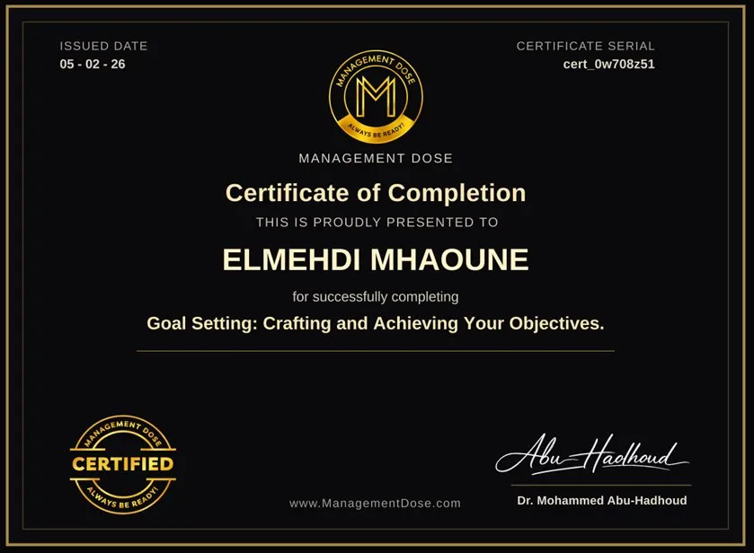
In this course, I mastered the science and psychology of effective goal setting, learning how to define, plan, and achieve meaningful objectives across every area of life. I explored the foundations of goal-setting habits, assessed my personal tendencies, and discovered how to align goals with my energy, priorities, and real-life constraints. I learned to apply the SMART framework to make goals Specific, Measurable, Achievable, Relevant, and Time-bound, while avoiding common pitfalls that derail progress. I explored the differences and connections between short-term vs. long-term goals, personal vs. professional goals, outcome vs. process goals, and performance vs. learning goals. I also practiced setting stretch vs. comfort goals, intrinsic vs. extrinsic goals, and individual vs. team goals to maximize motivation and effectiveness. The course deepened my understanding of psychological barriers, including fear, perfectionism, procrastination, and burnout, and taught strategies to overcome them. I gained insights into how the brain sets and achieves goals, how motivation works, and how to maintain progress sustainably. Through reflections, quizzes, and a final capstone project, I built a personalized goal-setting system designed for real-life application. This course transformed my approach from vaguely wishing for outcomes to systematically designing, pursuing, and achieving goals with clarity, confidence, and consistency.
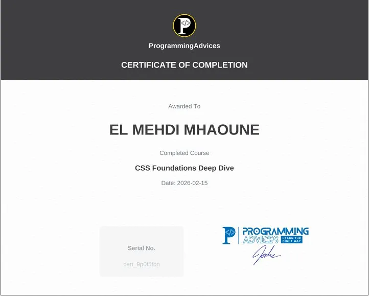
In this course I mastered CSS as a true styling system, understanding how rules, specificity, inheritance, and the cascade control page presentation. I learned to predict layout behavior, apply modern layouts with Flexbox and Grid, control spacing and typography, and style images, backgrounds, gradients, shadows, and animations professionally. I practiced responsive design with media queries, viewport units, and CSS math functions, and I gained proficiency using DevTools to inspect, debug, and optimize styles. I learned to build maintainable and scalable CSS with variables, pseudo-elements, and reusable patterns, ensuring layouts and components behave consistently across browsers and devices. Through projects, quizzes, and examples, I developed a mindset to write CSS confidently and systematically, preparing myself for frameworks, UI libraries, and large-scale web applications. This course transformed my understanding from "knowing properties" to controlling and structuring styles like a professional frontend developer.
The Bank Management Project is a C++ console application developed by El Mehdi Mhaoune. It simulates a basic banking system, allowing management of users, clients, and transactions using a file-based database. The project focuses on object-oriented programming (OOP) principles, modular code organization, and practical use of file handling (fstream) in C++.
This is a simple Windows Forms application implemented in C# for playing the classic game of Stone, Paper, Scissors (Rock, Paper, Scissors) against the computer. The application allows users to configure the number of rounds and tracks the score and progress of the match until a winner is determined.
A simple Tic-Tac-Toe (X-O) game built with C# and WinForms. This project demonstrates basic game logic, UI design, and event handling in Windows Forms.
This project is a Math Quiz Game built with C# and Windows Forms. Players can choose the quiz level, math operation, number of rounds, and an optional time limit. The game generates random math questions with four answer options and tracks correct, wrong, and skipped answers. At the end, a results screen shows the player's performance and quiz details.
This project represents the Presentation Layer (PL) of the DVLD (Driving and Vehicle License Department) system, developed using C# WinForms (.NET) with Guna UI2 for a modern user interface. The PL manages user interactions and communicates with the Business Layer (BL) and Data Access Layer (DAL) using a 3-tier architecture. The interface provides user-friendly forms, data display using DataGridView, and integrates with the BL to apply business rules. The DAL handles database operations using ADO.NET with SQL Server and inline SQL queries.
Arena Whistle is a desktop application built with C# WinForms and SQL Server to manage stadium bookings and sports facility operations. The system allows administrators to manage stadiums, bookings, users, employees, referees, and payments through a modern interface built with Guna UI2. The application follows a clean multi-layer architecture (PL, BLL, DAL). The Presentation Layer handles the user interface, the Business Logic Layer manages validation and business rules, and the Data Access Layer communicates with the database using ADO.NET and SQL Server stored procedures. Key features include stadium management with multiple images, booking scheduling with overlap prevention, role-based user permissions, payment and fine tracking, and operation logging. The database contains 25+ tables with advanced T-SQL features such as triggers, functions, transactions, and error handling. This project demonstrates practical use of OOP principles, database design, multi-layer architecture, and real-world software development practices.